1 / 8

1
2 / 8

2
3 / 8

3
4 / 8

4
5 / 8

5
6 / 8

6
7 / 8
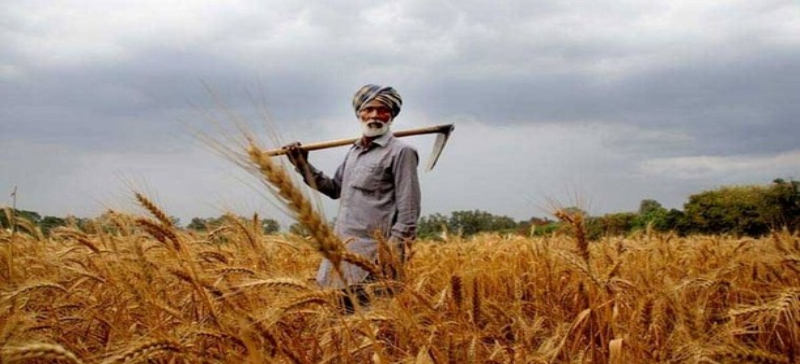
7
8 / 8

8
| Agricultural Apps | URL |
|---|---|
1. Plantix – is your crop Doctor.Plantix is the most prominent digital kheti badi platform for farmers. We have designed a user-friendly and straightforward app with which you can accurately detect crop diseases within a few seconds. Here is the perfect solution for crop diagnosis that will help boost your yield. it will give information on: • Crop Diagnosis by sending photo through WhatsApp • Suggesting Treatment on Diagnised disease |
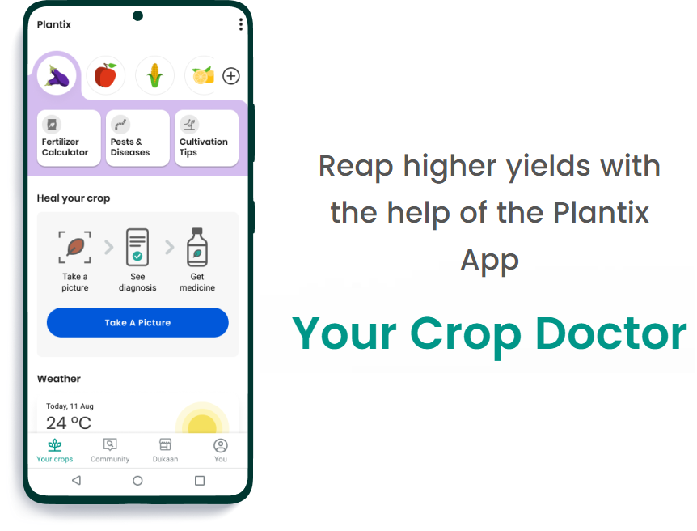 Download: iOS App I Android app - Plantix App |
2. Kisan Suvidha – Stay informed on weather and market prices of commodities/ cropsThis app empowers farmers and helps them with information that can increase their farming yield. App lists all the schemes related to agriculture along with Animal husbandry. app provides information on: • Weather forecasts for next week • Market rates of commodities & crops in nearby areas • Crop Insurance information • Information on retailers for fertilisers, seeds, and more • Tips for soil fertility, organic farming. |
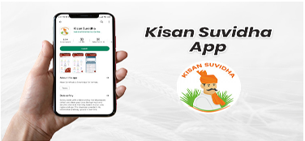 Download: iOS App I Android app - Kisan Suvidha App |
3. AgriApp – Stay updated on crop prices and avoid distressed salesAgri app is a farmers’ app that helps farmers stay updated on the best farming and agricultural practices. This app talks about the best crop production, management and protection activities. • Distinguish between high-value and low-value varieties of crops. • Best soil and climatic conditions to sow crops. • The Best methods for types of harvesting and storage procedures. • Best online markets to buy fertilisers and insecticides. The app offers video-based learning and has experts available for consulting on any agriculture-related aspect. The app also keeps you notified about the latest agricultural news and updates. |
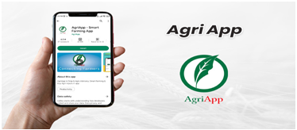 Download: iOS App I Android app - Agri App |
4. Crop Insurance App – Helps you with the calculation of insurance premiums for notified cropsCrop insurance is a farmer mobile app that can calculate the insurance premium for notified crops based on area, coverage amount and loan amount in the case of a loaner farmer. It also provides the details of the standard sum insured, premium details, subsidy information and extended sum certified of any notified crop in any notified area. Farmers can use this app as a reminder and calculator for their insurance. |
 Download: iOS App I Android app - Crop Insurance App |
5. Tractor Junction AppThe app offers a single platform to review all the Moreover, the tractor Junction app provides access to trusted tractor dealers, local tractor dealers with their correspondence details. When you download the app, you get; Complete list of all latest tractor models, tractor implements and accessories from famous brands. • Platform to buy new or used tractors at very reasonable prices. • Access to loan & EMI calculators and banking institutions. • Access to certified Tractor dealers nearby. • Best online markets to buy fertilisers and insecticides. • Interactive videos, latest news, and agricultural and farming equipment reviews. |
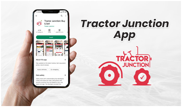 Download: iOS App I Android app- Tractor Junction App |
6. Krish-e AppThis app provides a personalized crop calendar for Indian farmers. The app provides expert information on: • Best land preparation methods • Crop sowing patterns • Fertilizers application & management • Crop planning for better yield • Seed sowing and treatment • Crop disease diagnosis & treatment • Weed uprooting methods • Irrigation methods based on soil |
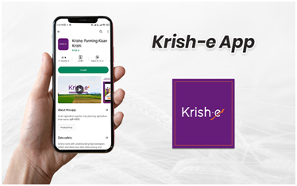 • Download: iOS App I Android app- Krish-e |
7. Kheti-Badi App – A must use app for Organic farmersSince organic farming is on constant rise, Kheti Badi is the best app for farmers that promote organic farming related information. This farmer mobile app encourages farmers to change their chemical farming practices into sustainable organic farming. Detailed information about Organic / Natural farming is present on the app like: • Cultivation techniques of fruits and vegetables • Recipes of ZBNF (Zero Budget Natural Farming) • Ask questions to experts • Government schemes for Organic / Natural farmers • List of all resources to do chemical-free farming |
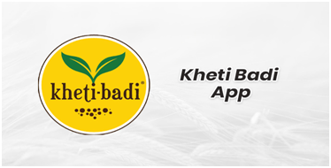 • Download: iOS App I Android app - Kheti-Badi App |
8. Krishify – A Social Farming AppThis app gives the best knowledge on: • Poultry farming • Dairy farming • Horticulture • Fish Farming • Additionally, the app also offers expert advice related to crops, animal health, and allied farming-related questions. |
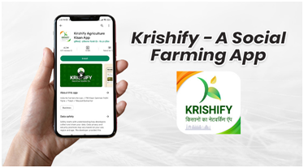 • Download: iOS App I Android app - Kheti-Badi App |
9. Pusa Krishi – Discover technologies developed by the Indian Govt (IARI)It gives farmers access to the latest technologies that are developed by Indian Agriculture Research Institute (IRAI). Also, this is one of the best farming mobile apps as it provides information on: • New crop varieties introduced by ICAR • Best practices to conserve resources while cultivating • Best farm machinery and their implementation. |
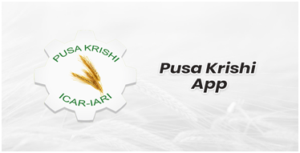 • Download: iOS App I Android app - Pusa Krishi App |
10. ShetkariThis multifunctional app gives farmers access to • Schemes launched or in practice by the Indian Agricultural Government • Best crop management methods • Agri business know-how and guidelines • Market rates of crop produces • Success stories in the field of agriculture. |
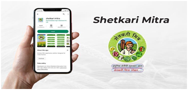 |
11. IFFCO Kisan AgricultureThis app gives information on Fertilizer to use IFFCO Kisan app is a subsidiary of Indian Farmers’ Fertiliser Cooperative Ltd. “IFFCO Kisan” is an suvidha Indian farming Mobile App, helping Indian farmers/ Kisaan to make informed decisions related to their needs by accessing customized agricultural information. An agriculture information library for the Farmer to get all-important agriculture information about crops, agriculture cycle, agriculture field preparation, water management, agriculture diseases management and agriculture proactive actions. |
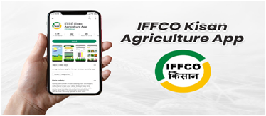 • Download: iOS App I Android app - IFFCO Kisan App |